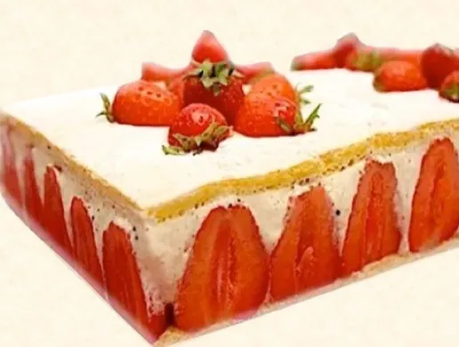

Страница с формами
Страница с формами открывается в новом окне

FRAISIER MINUTE AU MASCARPONE : LA RECETTE FACILE
Le fraisier est une pâtisserie à base de fraises, de génoise, de crème,
recouverte parfois d’une mince couche de pâte d’amande ou d’un sirop de
fraises.
Ses origines ne sont pas connues.
| Niveau de difficulté : facile |
| Temps de préparation : 30 min |
| Temps de repos : – |
| Temps de cuisson : 15 min |
| Temps total : 45 min |
| Ingrédients : 6 personnes |
| 250 g de fraises |
| 100 g de sucre en poudre |
| 100 g de farine |
| 190 g de mascarpone |
| 350 ml de crème fleurette entière |
| 4 œufs de grosse taille |
| 100 g de sucre glace |
Préparation :
-
Dans un bol, fouetter les jaunes d’œufs avec le sucre durant 5 min
jusqu’à l’obtention d’un mélange clair et mousseux.
- Ajouter la farine en pluie tout en fouettant.
-
Dans un autre bol, monter les blancs en neige ferme et incorporer
délicatement à la spatule au mélange précédent en effectuant des
mouvements lents de bas en haut.
-
Verser la pâte à génoise sur une plaque de cuisson munie de papier
sulfurisé et enfourner durant 12 à 15 min. Sortir et mettre de côté.
-
Découper 2 rectangles de génoise aux dimensions du cadre à pâtisserie.
Citation sur la cuisine :
« C’est une histoire d’amour la cuisine, il faut tomber amoureux des
produits et puis des gens qui les font. »
Alain Ducasse